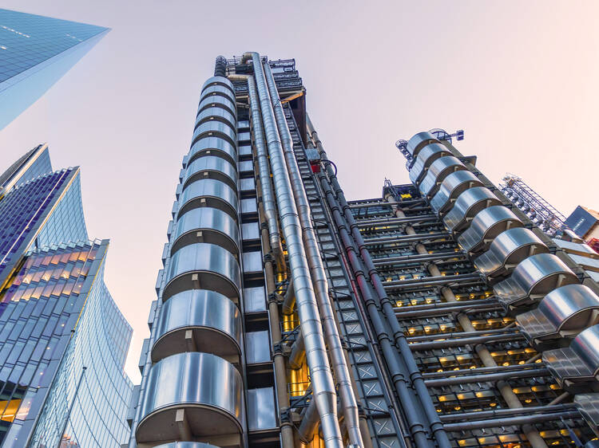

Why London?
London, the leading global city
London is the capital and largest city of England and the United Kingdom. It is a leading global city with strengths in the arts, commerce, education, entertainment, fashion, finance, healthcare, media, professional services, research and development, tourism, and transportation all contributing to its prominence. London has a diverse range of people and cultures, and more than 300 languages are spoken in the region.
London is a world cultural capital. It is the world's most-visited city as measured by international arrivals and has the world's largest city airport system measured by passenger traffic. London is the world's leading investment destination, hosting more international retailers and ultra high-net-worth individuals than any other city. It is also one of the world's largest financial centres and has the fifth- or sixth-largest metropolitan area GDP in the world, depending on measurement.